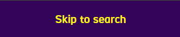
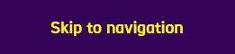
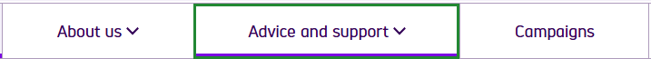
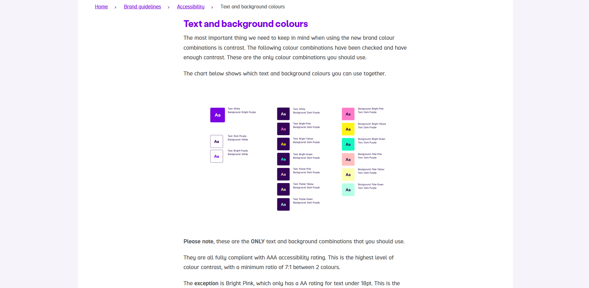

Skip to one of these sections...
SCOPE's Home Page
SCOPE is a website already geared towards accessibility. They are an organisation that “campaigns to transform attitudes to disability, tackle injustice and inspire action” (SCOPE, 2025).
They have brilliant keyboard navigation, amongst other things – but what else could they be doing? Let’s take a look at some of the principles they use, and discuss what they could do differently (if anything!)
Fig. 1 – SCOPE’s Home Page with a “skip to main content” banner.
They have a “skip to main content” option (Fig. 1) as soon as you press the “tab” button on the keyboard, giving users the option to avoid tabbing through all the options before getting to the content that matters.
Fig. 2 – “skip to search” banner.
Fig. 3 – “skip to navigation" banner.
When you tab again, you have the option to skip to search (Fig. 2), and to navigation (Fig. 3), meaning the time consuming steps in between are avoided.
Fig. 4 – Green border on the navigation menu to show what’s highlighted.
Clickable elements are highlighted with a green border (Fig. 4), which contrasts nicely against the purple decoration on the website.
Fig. 5 – SCOPE’s typography page.
SCOPE has a page dedicated to the fonts that they use (Fig. 5) – each one has been extensively considered and is designed to be readable.
They consider different fonts for different contexts, and also talk about line height, weight, and font size for print and digital.
Take a look at their page on typography!
Fig. 6 – An example of SCOPE’s flashy colour palette from their Home Page.
SCOPE uses bright, flashy colours (Fig. 6) that have high levels of contrast for visually impaired users.
Fig. 7 – SCOPE’s page dedicated to colour decisions.
Once again, they have a page dedicated to their use of colours and in what context they can be used (Fig. 7). They are dedicated to making an accessible environment!
SCOPE is difficult to criticise, considering their extensive research and thought.
The only point I would make is about their use of flashy colours. For some users, this can be too intense and they would prefer colours that are more muted and softer on the eyes.
However, it’s not always possible to cater for everyone. SCOPE does so much better than many other websites, so we can’t fault them for that!
Overall, SCOPE dedicates their branding to accessibility, while still keeping an obvious identity. They have considered a multitude of factors and even have a page dedicated to their brand accessibility, should users be curious to learn about their design choices.
SCOPE is a website not only dedicated to campaigning for disability, but other designers can take inspiration from them too.